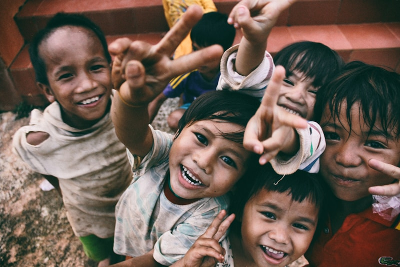

Conheça Nossos Projetos
Educação para Todos

O projeto Educação para Todos oferece reforço escolar gratuito para crianças e
adolescentes de 6 a 14 anos em situação de vulnerabilidade social. Através de
metodologias inovadoras e professores voluntários qualificados, buscamos melhorar
o desempenho escolar e reduzir a evasão. Atualmente atendemos 200 alunos em nossa
sede e em escolas parceiras.
Capacitação Profissional

Nosso programa de Capacitação Profissional prepara jovens e adultos para o mercado
de trabalho através de cursos gratuitos em diversas áreas como informática,
administração, culinária e artesanato. Além das aulas técnicas, oferecemos
orientação para elaboração de currículos e preparação para entrevistas. Já formamos
mais de 500 pessoas, com taxa de empregabilidade de 70%.
Saúde em Comunidade
O projeto Saúde em Comunidade promove ações de prevenção e promoção da saúde em
bairros carentes. Realizamos campanhas de vacinação, orientação nutricional,
aferição de pressão arterial e glicemia, além de palestras educativas sobre
higiene e cuidados básicos de saúde. Contamos com parceria de profissionais
voluntários da área da saúde e já atendemos mais de 3.000 pessoas.
Alimentação Solidária

O programa Alimentação Solidária distribui cestas básicas mensalmente para 150
famílias em situação de insegurança alimentar. Além da distribuição de alimentos,
oferecemos oficinas de educação nutricional e aproveitamento integral dos alimentos,
ensinando receitas saudáveis e econômicas. O projeto funciona através de doações
de empresas parceiras e da comunidade.
Como Ajudar
Voluntariado
Seja um voluntário da ONG Vida Nova! Precisamos de pessoas dispostas a doar seu
tempo e conhecimento para transformar vidas. Temos oportunidades em diversas áreas:
educação, saúde, administração, comunicação, captação de recursos e logística.
Não é necessário ter experiência prévia, apenas vontade de fazer a diferença.
O trabalho voluntário pode ser realizado presencialmente ou remotamente, com
flexibilidade de horários. Cadastre-se em nossa página de cadastro e entraremos
em contato para alinhar a melhor forma de você contribuir.
Doações
Sua doação é fundamental para mantermos nossos projetos ativos e ampliarmos nosso
alcance. Aceitamos doações financeiras via transferência bancária ou PIX, além de
doações de alimentos não perecíveis, roupas, livros, materiais escolares e
equipamentos eletrônicos em bom estado. Todas as doações são documentadas e
prestamos contas mensalmente em nosso site. Para doações financeiras, emitimos
recibo para dedução no imposto de renda. Entre em contato conosco para saber
mais sobre como doar.